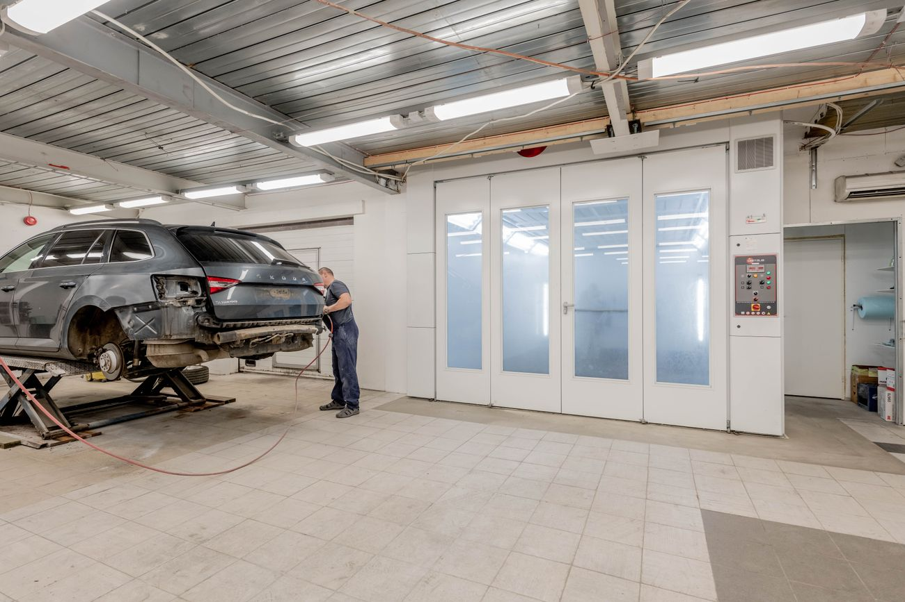

Кузовной цех
Ремонт любой сложности, восстановление геометрии кузова на стенде, подготовка к покраске.
Выберите работу, укажите машину и день — заявка уйдёт мастеру. Кузовной и малярный цех, развал-схождение на стенде Hunter, ремонт двигателей и коробок.

Фото — иллюстрация (Pexels), не цех «Мустанга»
С телефона текущий сайт открывается уменьшенной десктопной страницей, часов работы нет, записаться нельзя, а ссылки на почту в подвале ведут на неверный адрес — заявка теряется молча.
Работа, машина и удобный день — одной заявкой с телефона; что делают и где — видно до звонка.
Предлагает только будущие часы по омскому времени, собирает марку и симптомы и отправляет заявку мастеру в Telegram.
✦Это концепт. С вашими фото и правками будет ещё лучше
Перечень — со страниц «Услуги» текущего сайта. Цены, кроме указанной, на сайте не опубликованы — уточняются.
Ремонт любой сложности, восстановление геометрии кузова на стенде, подготовка к покраске.
Покраска в окрасочной камере; замер толщины покрытия толщиномером — видно, была ли машина в ДТП.
Бесплатно, перед мелкосрочным ремонтом: стойки, амортизаторы, шаровые, сайлентблоки, подшипники.
На стенде Hunter.
На установке без снятия диска с машины — от 650 ₽ (цена с текущего сайта, актуальность уточняется).
Ремонт и капитальный ремонт ДВС и механических коробок, промывка форсунок; помогут подобрать и заказать запчасти.
Цитаты — дословно с Яндекс Карт, без имён.
«Отличное СТО. Всё сделали быстро и качественно, без лишних навязываний. Мастера адекватные, всё объяснили по машине. Остался доволен, рекомендую.»Отзыв с Яндекс Карт
«Рекомендую всем! Автодиагностика, автоэлектрик а, жестянка и многие другие услуги для авто выполняют квалифицированные мастера. Несколько подъемников, современная камера для покраски, комната для ожидания, всего не перечислить!»Отзыв с Яндекс Карт
«Огромный бокс, крутые специалисты, которые работают на совесть и долго на постоянном месте. Вся необходимая техника, все необходимые услуги для а/м оказываются»Отзыв с Яндекс Карт
В рабочей версии в заявке сразу видно работу, машину и симптомы — мастер называет срок и стоимость до приезда.
В демо — пн–сб 9:00–19:00 по омскому времени (по справочникам; на сайте и в Яндексе часы не указаны — уточняется).
Телефоны — из карточки на Яндекс Картах. Почта на текущем сайте указана с ошибкой в ссылке — какой ящик рабочий, уточняется.